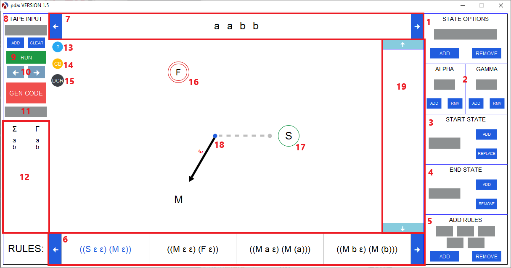
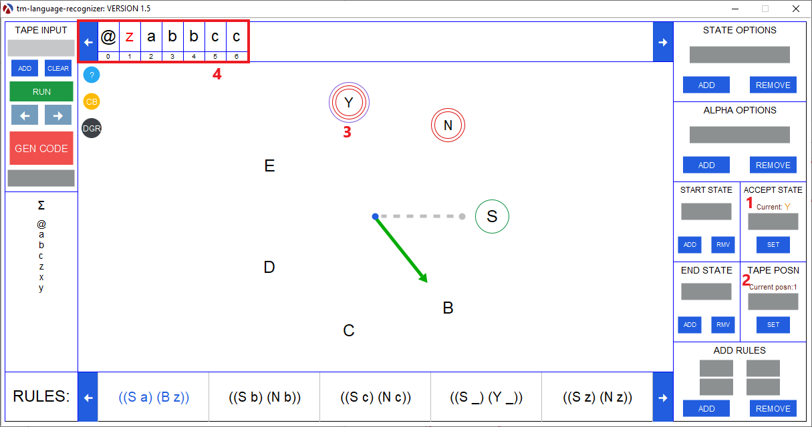

Fig 1: A pda being visualized in the tool.
- State Options
- Alpha Options
- Add or remove a single letter from the alphabet (Displayed in 13).
- Add or remove a single letter from the gamma (PDA only).
- Start State
- Add or replace a start state.
- End State
- Add or remove a end state
- Add Rules
- Add a transition rule to the machine (Displayed in 6).
- Note: The appearance of this section changes based on the machine type.
The functionality remains the same.
- Rules
- All machine transition rules are displayed in the bar.
- Machine Tape
- The input that the machine will consume (See figure 2).
Fig 2: The input for a machine. The lighter color symbolizes that the input was consumed. The red is added for emphasis.
- Tape Input
- Add or clear the tape. Each input must be separated by a space.
- Run
- Run the machine with the given tape. An empty tape is allowed.
- Next and Prev
- Goes back or forward through the tape and visualizes each transition
- Gen Code
- Generates the FSM code fo the machine currently displayed in the Visualization tool.
- The input field below Gen Code allows the user to specify the name of the file. The file
is always saved in the current directory.
- Sigma (alphabet) and Gamma (stack alphabet)
- The alphabet for the machine
- For PDA: Gamma is also displayed
- Help Button
- Color Blind Mode
- A toggle that enables color blind mode.
- Graph View
- A toggle that displays the graph or control representation of the machine
- Note: To display graph representation GraphViz must be installed and added as an env variable.
How to install.
- Final State
- A final state symbolized by two red circles. There can be multiple final states.
- Start State
- The starting state symbolized by a green circle.
- Transition
- Stack (PDA Only)
- The stack for the current machine
The following functionality is only applicable to tm's and language recognizers

Fig 4: A tm-language-recognizer being visualized in the tool.
- Accept State (language recognizer only)
- The accept state for the machine.
- Tape Position
- To alter to position of the head on the tape.
- Accept State (language recognizer only)
- A accept state symbolized by two red circles surrounded by a blue circle. There can only one accept states.
- Tm Tape
- The tape for a turing machine. The number below each sigma is their position on the tape
- The current head on the tape is the red highlighted sigma.